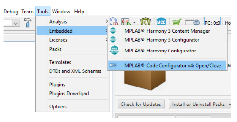
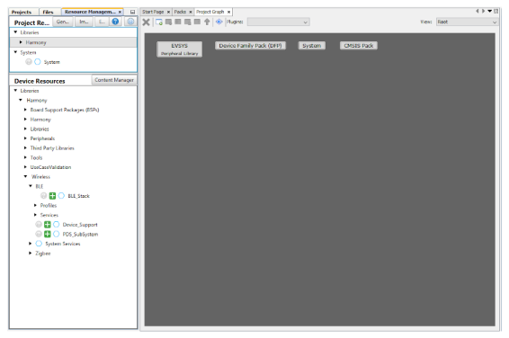
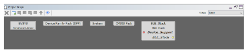
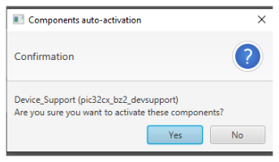
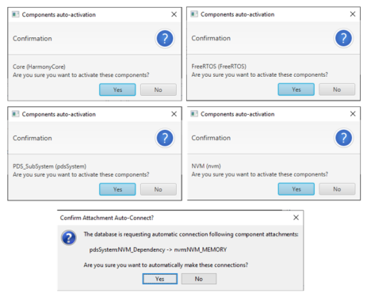
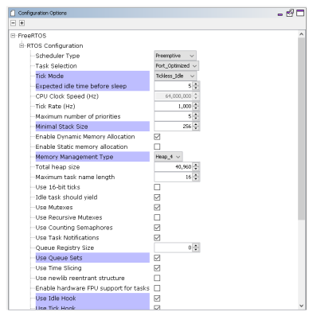
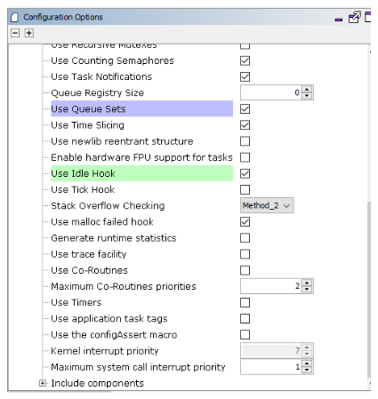

3.1.1.1 Central - FreeRTOS BLE Stack and App Initialization
Getting Started with Central Building Blocks
Introduction
This document gives a detail information on creating a new MCC Harmony project, configuring FreeRTOS component and BLE stack component in the project and generating code using the MPLAB MCC framework.
It is recommend to follow the examples in order, by learning the basic concepts first and then progressing to the more advanced topics.
Recommended Reading
Hardware Requirement
None
Software Setup
Initiating a BLE Stack
This section explains the steps required to develop this application example from scratch using MPLABx Code Configurator.
Create a new MCC Harmony Project. For more details, refer to 2.5 Creating a New MCC Harmony Project
- Open the MPLAB Code Configurator:Default MPLAB Code Configurator window
- Click Plus Symbol the BLE Stack component on to the project graph (BLE Stack is part of Wireless Component)
- Upon BLE Stack being added to project graph, the different component dependencies will be requested to be added. User has to select "yes" to add all the dependant components.
- Activate the components (snapshot below does not cover all the necessary components that need to be activated. Users are expected to select "yes" for all dependant components)
- Verify Project Graph

- Display FreeRTOS component configuration options by Selecting the component in Project Graph.Note: Upon selecting any component, the default configuration options available for user are displayed.
- Configure FreeRTOS component to the following. The configuration chosen here should suit most application needs, users are recommended to follow the FreeRTOS Customization documented here to meet their needs
Display BLE Stack component configuration options by Selecting the component in Project Graph.
Default Configuration: Peripheral Device functionality is enabled by default. Central configuration needs to enabled and peripheral configuration should be unchecked
For more details on code generation, refer to Generate Code
- Switch to MPLAB X IDE window and Build Project. The project should compile successfully.
Choose the correct compiler version, as suggested in development environment.
Build Project, upon building project user action is required as mentioned 14.1 User Action
For more information, refer to UART